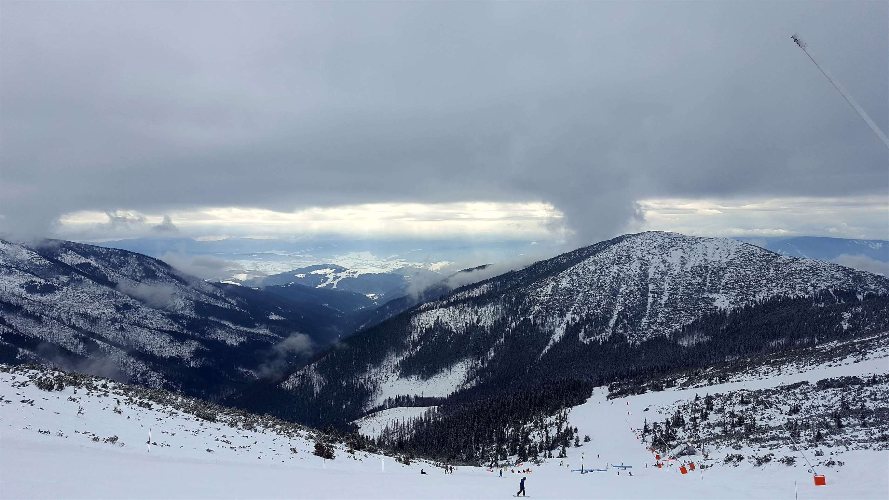

Trips
Back to Map
Chopok

Chopok is the third highest peak of the Low Tatra range in central Slovakia. The peak offers a panoramatic view of High Tatra, Liptov and the valley of Hron. There is a chalet located near the summit. (source: Wikipedia)
Click here for more photos